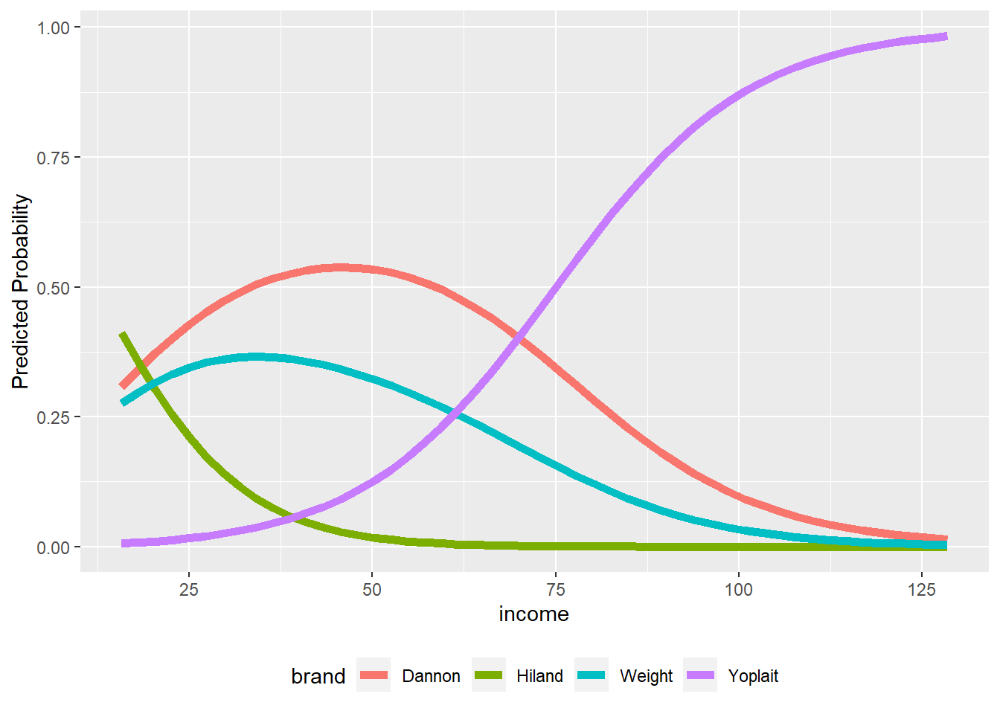

Chapter 9 Alt-Specific MNL
Data for this chapter:
The yogurt.rdata is used. Because of how the data is arranged, this data file contains two dataframes. One dataframe is a training sample, called
train.yog, and the other dataframe is a test/holdout sample, calledtest.yog. Both of these dataframes are included in theMKT4320BGSUpackage.data(train.yog) data(test.yog)
9.1 Introduction
Base R is not good for alternative specific multinomial logistic regression (MNL). The best package that I have found for alternative specific MNL is mlogit with its mlogit function. Use install.packages("mlogit") to install the package on your machine, then load it using the library function when needed.
library(mlogit)Loading required package: dfidx
Attaching package: 'dfidx'The following object is masked from 'package:stats':
filterHowever, even that is not very user friendly (in my opinion). Therefore, I have written a few user defined functions to help with getting the necessary results from an alternative specific MNL.
* asmnl_est produces Odds Ratio coefficients table, overall model significance, McFadden’s Pseudo-\(R^2\), and classification matrices for both the training data and the test/holdout data
* asmnl_me produces marginal effects tables for all IVs
* asmnl_mp produces margin plots for case-specific IVs
9.2 Alt-Spec MNL using User Defined Function
- Alternative Specific MNL is performed using the
asmnl_estuser defined function - Usage:
asmnl_est(formula, data, id="", alt="", choice="", testdata)formulais an object with a saved formula. The formula is represented by a DV on the left side separated from the IVs on the right side by a tilde(~). The IVs are further separated by having choice-specific variables on the left and the case-specific variables on the right, separated by a vertical line,|. For example:myform = choice ~ chvar1 + chvar2 | casvar1 + casvar2
datais the name of the training dataidis the variable that identifies the case (in quotes)altis the variable that identifies the choice (in quotes)choiceis the variable that identifies ifaltwas selected or nottestdatais the name of the test data
- The function will display the coefficients table, overall model significance, McFadden’s Pseudo-\(R^2\), and classification matrices for both the training data and the test/holdout data
- In addition, the results should be saved to an object to be used in other user defined functions
- NOTE 1: To work properly, all factor IVs should already be in dummy variable coding
- NOTE 2: This function also requires the
broompackage
library(mlogit)
# Saving formula to object
myform <- choice ~ feat + price | income
asmod <- asmnl_est(formula=myform,
data=train.yog,
id="id",
alt="brand",
choice="choice",
testdata=test.yog)
---------
Model Fit
---------
Log-Likelihood: -1618.4208
McFadden R^2: 0.2397
Likelihood ratio test: chisq = 1020.5649 (p.value < .0001)
---------------------
OR Estimation Results
---------------------
term estimate std.error statistic p.value
(Intercept):Hiland 2.1355 0.5677 1.3365 0.1814
(Intercept):Weight 0.9740 0.2079 -0.1269 0.8990
(Intercept):Yoplait 0.0185 0.2680 -14.8845 0.0000
feat 1.5267 0.1491 2.8371 0.0046
price 0.6425 0.0296 -14.9691 0.0000
income:Hiland 0.8975 0.0149 -7.2464 0.0000
income:Weight 0.9886 0.0038 -3.0436 0.0023
income:Yoplait 1.0756 0.0040 18.1030 0.0000
---------------------------------------
Classification Matrix for Training Data
---------------------------------------
0.6207 = Hit Ratio
0.3299 = PCC
T.Dannon T.Hiland T.Weight T.Yoplait Total
P.Dannon 577 39 324 97 1037
P.Hiland 1 12 0 2 15
P.Weight 18 2 38 18 76
P.Yoplait 132 1 53 497 683
Total 728 54 415 614 1811
--------------------------------------
Classification Matrix for Holdout Data
--------------------------------------
0.6073 = Hit Ratio
0.3309 = PCC
T.Dannon T.Hiland T.Weight T.Yoplait Total
P.Dannon 199 14 104 38 355
P.Hiland 2 2 1 1 6
P.Weight 8 1 12 13 34
P.Yoplait 33 0 21 152 206
Total 242 17 138 204 6019.2.1 Marginal Effects
- The
asmnl_meuser defined function will be used to get the marginal effects of the IVs - Usage:
asmnl_me(mod)modis the object containing the result of themlogitcall using theasmnl_estuser defined function
asmnl_me(asmod)
--------------------------------
Predicted Probabilities at Means
--------------------------------
Dannon Hiland Weight Yoplait
0.4832 0.0048 0.2571 0.2549
-------------------------
Marginal effects for feat
-------------------------
Dannon Hiland Weight Yoplait
Dannon 0.10565 -0.00098 -0.05256 -0.05212
Hiland -0.00098 0.00201 -0.00052 -0.00052
Weight -0.05256 -0.00052 0.08080 -0.02773
Yoplait -0.05212 -0.00052 -0.02773 0.08036
--------------------------
Marginal effects for price
--------------------------
Dannon Hiland Weight Yoplait
Dannon -0.11049 0.00102 0.05496 0.05450
Hiland 0.00102 -0.00211 0.00054 0.00054
Weight 0.05496 0.00054 -0.08450 0.02899
Yoplait 0.05450 0.00054 0.02899 -0.08404
---------------------------
Marginal effects for income
---------------------------
Dannon Hiland Weight Yoplait
-0.00731 -0.00059 -0.00684 0.01473 9.2.2 Margin Plots
- The
asmnl_mpuser defined function will create margin plots for a case-specific IV - Usage:
almnl_mp(mod, focal="", type="") *modis the object containing the result of themlogitcall using theasmnl_estuser defined function *focalis the case-specific IV for which a margin plot is wanted (in quotes) *typeis the type of IV; must be either“C”for continuous or“D”` for dummy - NOTE: This function requires the
ggplot2package
asmnl_mp(asmod,"income", "C")